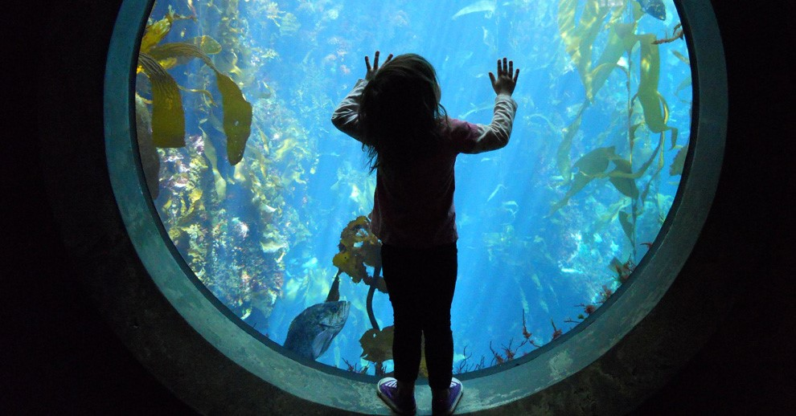

Why zoos ?
Zoos play an important role in society by educating the public about animals and working to conserve
endangered species.
While there are valid concerns about the welfare of animals in captivity,
many zoos have made significant strides in improving living conditions and promoting animal welfare.
Ultimately, the value of zoos will depend on how they continue to evolve and adapt to changing attitudes and
scientific discoveries.
Benifits of Zoos
Species Directory
| COMMON NAME | SCIENTIFIC NAME | CONSERVATION STATUS |
|---|---|---|
| Black Rhino | Diceros bicornis | Critically Endangered |
| Sumatran Elephant | Elephas maximus sumatranus | Critically Endangered |
| African Wild Dog | Lycaon pictus | Endangered |
| Bonobo | Pan paniscus | Endangered |
| Bigeye Tuna | Thunnus obesus | Vulnerable |
| Dugong | Dugong dugon | Vulnerable |
| Jaguar | Panthera onca | Near Threatened |